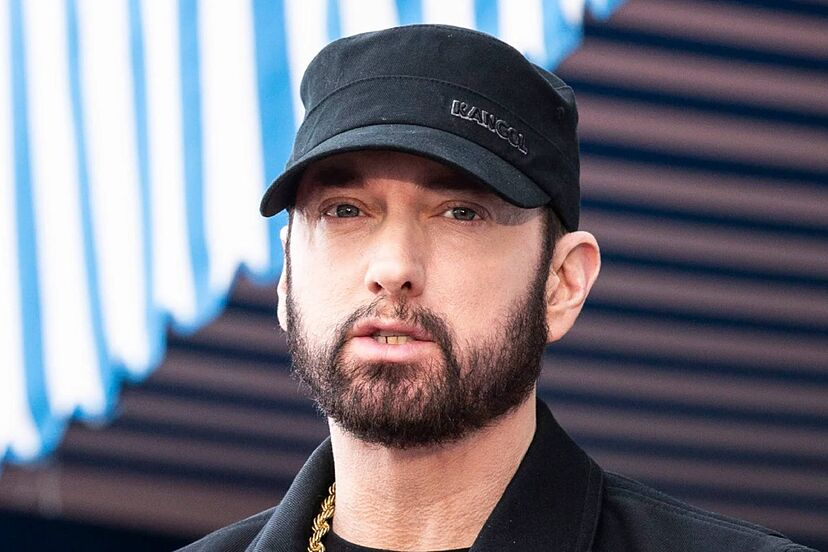
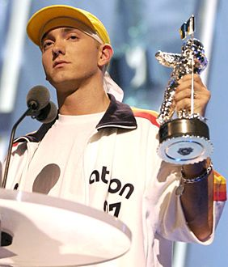

Marshall Bruce Mathers III, conocido artísticamente
como Eminem, es un rapero, productor y actor estadounidense.
Se le atribuye la popularización del hip hop en las clases
medias y altas de Estados Unidos y es aclamado por la crítica
como uno de los mejores raperos de todos los tiempos.


En febrero de 1999, lanzó el álbum con el que triunfó en Estados Unidos The Slim Shady con el sencillo de My Name Is,
y el 23 de mayo de 2000, apareció el nuevo album The Marshall
Mathers LP que fue un exito en todo el mundo. En febrero del
año 2000 ganó dos Grammys por ambos discos en la categoría de rap
En febrero de 2001 obtuvo tres Grammys, también en la categoría de rap.
En mayo de 2002 publicó el sencillo adelanto de su nuevo disco. El sencillo, Without Me, alcanza el top 10 de las listas americanas en solo tres semanas. Su cuarto álbum, The Eminem Show, fue publicado en el mismo año.
Eminem y sus redes sociales
Spotify: 95 millones de seguidores, posicionándose en el top 7 mundial